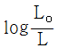
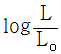
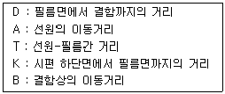
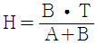
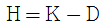
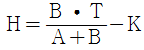
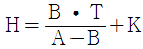
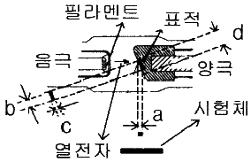
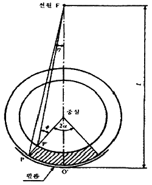
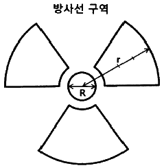

방사선비파괴검사기사 (2019-09-21 기출문제)
1과목: 비파괴검사 개론
1. 이상기체에서 압력의 변화는 없고 18℃인 기체의 부피가 1.5배가 되었을 때의 온도는?
- 27.5℃
- 163.5℃
- 291℃
- 473℃
(정답률: 61%)

2. 다음 비파괴검사법에서 시험체 내의 결함정보를 얻을 때 의사지시를 만들거나 또는 결함검출 능력을 저하시키는 요인과의 연결이 잘못된 것은?
- 방사선투과시험 : 산란선
- 초음파탐상시험 : 표면 거칠기
- 자분탐상시험 : 전극 지시
- 와전류탐상시험 : 적산효과
(정답률: 71%)
3. 다음 중에서 비파괴검사의 적용이 가장 적절한 것은?
- 스테인리스강의 내부에 존재하는 결함의 깊이를 측정하기 위해서는 방사선투과시험을 선정한다.
- 알루미늄 주조품의 표면근처 결함을 검출하기 위해서는 자분탐상시험을 선정한다.
- 동관의 표층부 결함을 검출하기 위해서는 와전류탐상시험을 선정한다.
- 다공성 강재의 표면결함을 검출하기 위해서는 초음파탐상시험을 선정한다.
(정답률: 79%)
4. 별도의 전원 공급 장치 없이 검사가 가능한 비파괴검사법은?
- 자기비파괴검사(코일법)
- 염색침투탐상검사
- 초음파탐상검사
- 와전류탐상검사
(정답률: 75%)
5. 비파괴검사의 신뢰도에 영향을 미치는 요소와 가장 관계가 먼 것은?
- 검사 비용
- 기술자의 능력
- 검사 장치
- 검사 방법의 선택
(정답률: 78%)
6. 철강 재료의 경도 시험법에 대한 설명으로 틀린 것은?
- 비커스 경도 시험은 경도의 단위로 HV를 사용한다.
- 브리넬 경도 시험은 반발을 이용하는 경도 시험법이다.
- 로크웰 시험법은 강철 또는 다이아몬드 압입자를 사용하는 경도 시험법이다.
- 누프 경도 시험법은 꼭지점에서 양 반대면 사이의 규정된 각도를 가진 피라미드형 다이아몬드 압입자를 사용하는 경도 시험법이다.
(정답률: 55%)
7. 아연합금에 관한 설명으로 틀린 것은?
- 고순도 다이캐스팅용 아연합금은 고온에서 입계부식을 일으킨다.
- 가공용 아연합금에는 Zn-Cu계, Zn-Cu-Mg계, Zn-Cu-Ti계 등이 있다.
- 금형용 아연합금은 다이캐스팅용보다 Al과 Cu를 증가시켜 강도 및 경도를 개선한 것이다.
- 다이캐스팅용 아연 합금에는 Zn-Al-Cu계, Zn-Al계 등이 있다.
(정답률: 47%)
8. 다음 중 FRM에 일반적으로 사용되는 섬유의 종류가 아닌 것은?
- B
- SiC
- C
- Al
(정답률: 56%)
9. 다음 중 형상 기억 효과를 나타내는 합금이 아닌 것은?
- Ni - Ti
- Cu – Al - Ni
- Cu –Zn - Al
- Al – Cu – Si
(정답률: 54%)
10. 다음 중 고아연황동에서 일어나는 탈아연 부식을 억제하는데 사용되는 원소와 가장 거리가 먼 것은?
- As
- Sb
- Pb
- Sn
(정답률: 65%)
11. 다음 비파괴검사 시험 중 금속 내부의 결함을 검출하는데 가장 적절한 시험은?
- 침투 탐상 시험
- 초음파 탐상 시험
- 와류 탐상 시험
- 자분 탐상 시험
(정답률: 76%)
12. 다음 중 TTT곡선과 가장 관계있는 것은?
- 인장곡선
- 소성곡선
- 크리프곡선
- 항온변태곡선
(정답률: 68%)
13. 열전대에 사용되는 알루멜 합금의 주요 조성으로 옳은 것은?
- Ni - Al
- Al - Cr
- Ni - Cr
- Al – Mn
(정답률: 47%)
14. 다음 중 Al-Cu계 합금의 시효석출 과정으로 옳은 것은?
- 과포화고용체 → GP영역 → θ′ 중간상 → θ 안정상
- 과포화고용체 → θ′ 중간상 → GP영역 → θ 안정상
- 과포화고용체 → θ 안정상 → θ′ 중간상 → GP영역
- θ′ 중간상 → θ 안정상 → 과포화고용체 → GP영역
(정답률: 59%)
15. 다음 중 질화강의 주요 합금원소가 아닌 것은?
- Al
- Cr
- Si
- Ti
(정답률: 60%)
16. 수동 아크 용접기의 특성으로 맞는 것은?
- 정전류 특성인 동시에 정전압 특성으로 설계되어 있다.
- 수하 특성인 동시에 정전류 특성으로 설계되어 있다.
- 정전압 특성인 동시에 상승 특성으로 설계되어 있다.
- 수하 특성인 동시에 정전압 특성으로 설계되어 있다.
(정답률: 48%)
17. 용접부에 발생하는 비틀림 변형을 줄이기 위한 시공 상의 주의사항으로 틀린 것은?
- 용접부에 집중 용접을 피할 것
- 용접 시 적당한 지그를 활용할 것
- 이음부의 맞춤을 정확하게 할 것
- 용접순서는 구속이 작은 부분에서부터 용접할 것
(정답률: 71%)
18. 정격 2차 전류 300A, 정격 사용률이 40%인 아크 용접기를 200A의 용접전류로 용접할 때 허용 사용률은?
- 17.8%
- 40%
- 60%
- 90%
(정답률: 52%)
19. 용착부를 두들겨서 용착금속의 수축을 방지하고 변형을 감소시키는 방법은?
- 피닝법
- 도열법
- 빌드업법
- 캐스케이드법
(정답률: 67%)
20. 아크 쏠림의 방지 대책으로 틀린 것은?
- 접지점 2개를 연결한다.
- 접지점을 용접부에서 멀리한다.
- 아크 길이를 길게 하여 용접한다.
- 용접봉 끝을 아크 쏠림 반대 방향으로 기울인다.
(정답률: 58%)
2과목: 방사선투과검사 원리
21. 내부전환(Internal conversio)에 대한 설명으로 옳은 것은?
- 핵의 과잉에너지가 β선으로 방출된다.
- 궤도전자가 방출된 후 특성 X선이 방출된다.
- γ선이 궤도전자와 충돌로 에너지가 약해진다.
- 불안정한 핵이 궤도전자를 포획한 후 특성 X선을 방출한다.
(정답률: 55%)
22. X선이 관전압이 100kV 일 때 최소 파장은 약 얼마인가?
- 0.04 Å
- 0.12 Å
- 0.51 Å
- 0.72 Å
(정답률: 78%)
23. 방사선투과검사에서 작은 결함을 분리하여 검출할 수 있는 능력과 가장 관계가 깊은 것은?
- 관용도, 필름명암도
- 감마값, 사진농도
- 감마선등가계수, 노출시간
- 선명도, 분해능
(정답률: 81%)
24. 자동현상제에서 감광유제의 부풀음(Swelling)을 조절하기 위하여 사용하는 경화제의 성분으로 옳은 것은?
- 글루터알데히드(glutaraldehyde)
- 페니돈(phenidone)
- 하이드로퀴논(hydroquinone)
- 물(water)
(정답률: 58%)
25. 방사선투과검사에서 필름의 감광특성에 관한 설명으로 틀린 것은?
- 필름의 감광특성곡선의 형상은 X선 관전압 또는 감마선의 선질과는 상대적으로 무관하다.
- 현상도는 현상온도 및 현상시간에 따라 영향을 받는다.
- 어떤 제한된 범위에서 현상도가 증가하면 콘트라스트가 감소한다.
- 현상시간이 길어짐에 따라 특성곡선은 가파르게 된다.
(정답률: 45%)
26. X선 발생장치에서 발생 총에너지(IE)에 대한 설명으로 틀린 것은?
- 저항에 비례하여 증가한다.
- 타깃 물질 원자번호에 비례하여 증가한다.
- 관전류에 비례하여 증가한다.
- 관전압의 자승에 비례하여 증가한다.
(정답률: 60%)
27. 방사선투과검사에서 감마선을 사용할 때의 장점으로 틀린 것은?
- 폐기선원은 별도 관리하거나 위탁 폐기하기 때문에 부담이 없다.
- 장비가 소형이므로 휴대성이 좋다.
- 장비가 견고하여 작동이 용이하고 유지비가 적다.
- 전원 없는 장소에서 작업이 용이하다.
(정답률: 73%)
28. 방사선투과검사에서 관용도가 나쁜 것은?
- 필름특성곡선의 직선부에서 노광량의 범위가 넓은 것
- 일정사진 농도 범위를 얻기 위한 노출량 범위가 큰 필름을 사용한 것
- 필름 콘트라스트가 작은 것
- 필름 감마값이 큰 것
(정답률: 47%)
29. 방사선과 물질과의 상호작용에 대한 설명으로 틀린 것은?
- 전자쌍생성은 광양자가 소멸하고 그 대신에 양전자만 생성되는 현상이다.
- 이온화 작용은 입자에 의한 이온화와 전자기 방사선에 의한 이온화가 있다.
- 광전효과는 광량자의 에너지가 궤도전자의 여기 에너지보다 큰 경우에만 일어난다.
- 콤프턴효고에서 X선의 광자와 전자와의 사이에는 운동량보존법칙이 성립한다.
(정답률: 62%)
30. 방사선투과검사에서 X선관의 관전압에 영향을 받는 것은?
- 빔의 강도와 각도
- 빔의 강도와 파장
- 빔의 분포와 크기
- 빔의 각도와 넓이
(정답률: 74%)
31. 방사선투과검사에서 필름을 감광시키는 역할을 하는 것은?
- α입자
- 전자
- 중성자
- δ선
(정답률: 64%)
32. X선 발생장치에서 관전압 및 관전류의 설명으로 틀린 것은?
- 관전압을 증가시키면 최단파장과 최대강도는 장파장측으로 이동한다.
- 관전압을 증가시키면 출력 X선 강도는 그 제곱만큼 증가한다.
- 관전류만 변화시키면 X선의 파장의 분포는 변화가 없다.
- 관전류만 변화시키면 상대적 광자수가 변한다.
(정답률: 44%)
33. 방사성동위원소에 대한 설명으로 맞는 것은?
- 원자번호가 다르고 중성자수가 다르나 이에 따른 질량수가 같은 원소
- 원자번호가 다르고 중성자수가 같으나 이에 따른 질량수가 다른 원소
- 원자번호는 같으나 중성자수가 다르고 이에 따른 질량수가 다른 원소
- 원자번호가 같고 중성자수가 같으며 이에 따른 질량수도 같은 원소
(정답률: 68%)
34. 전자파에 대한 E = hν식을 설명한 것으로 틀린 것은? (단, E = 에너지 , ν = 진동수 이다.)
- E는 광자에너지를 나타낸다.
- h는 아보가드로 상수로서 6.02 × 1023 이다.
- ν는 진동수로서 광속도를 파장으로 나눈 것이다.
- E(keV)와 파장(nm)의 곱은 1.24가 된다.
(정답률: 69%)
35. 방사선투과검사에서 선원과 시험체간 거리 300mm, 시험체와 필름간 거리 10mm, 선원의 크기 3mm 일 때, 기하학적 불선명도는?
- 0.1 mm
- 0.2 mm
- 0.3 mm
- 0.4 mm
(정답률: 46%)
36. 방사선투과사진의 농도(D)는 입사광의 강도를 Lo, 투과광의 강도를 L 이라 할 때 어떻게 표시되는가?


- ln(Lo - L)
- ln(L – Lo)
(정답률: 68%)
37. 방사선투과검사에서 회절반점에 대한 설명으로 틀린 것은?
- 시험체의 결정입자 크기가 큰 경우 발생한다.
- 두께가 아주 얇은 금속 시험체에서 발생한다.
- 회절에 의한 반점은 전압을 낮게하면 감소한다.
- 방사선투과사진 영상에 기공이나 편석과 혼동된다.
(정답률: 49%)
38. X선과 γ선의 물리적 특성으로 틀린 것은?
- 질량과 전하를 가지고 있지 않다.
- 진공 상태도 투과하고 광속도로 진행한다.
- X선은 물질의 핵 내에서 방출된 광자를 말한다.
- 흡수와 산란하며 투과한다.
(정답률: 59%)
39. 고유 비방사능(Ci/g)이 가장 큰 방사성 동위원소는?
- Co-60
- Cs-137
- Ir-192
- Tm-170
(정답률: 47%)
40. 방사선투과사진 감도에 영향을 미치는 인자 중 피사체 콘트라스트에 고려해야 할 것으로 옳은 것은?
- 시험체의 두께차, 방사선 선질, 산란방사선
- 필름의 종류, 초점크기, 산란방사선
- 필름의 종류, 현상시간, 현상액의 강도
- 필름의 종류, 방사선 선질, 스크린의 종류
(정답률: 56%)
3과목: 방사선투과검사 시험
41. 작동 주기가 100%인 엑스선 발생장치로 노출시간을 3분 주었을 때의 이 장치의 휴지시간은 얼마인가?
- 0분
- 1.5분
- 3분
- 6분
(정답률: 51%)
42. 방사선투과검사에서 용접부 촬영 시 나타나지 않는 결함은?
- 기공
- 슬래그개재물
- 콜드셧
- 융합불량
(정답률: 71%)
43. 다음 중 협조사범위 촬영법에 관한 설명으로 틀린 것은?
- 필름 카세트를 시험체에 가능한 밀착시킨다.
- 필름상의 산란선을 크게 감소시키기 위한 방법이다.
- 조리개나 차폐마스크를 사용하여 조사범위를 좁힌다.
- 투과사진의 콘트라스트가 최대값을 가질 수 있도록 최적 촬영배치를 찾아야 한다.
(정답률: 39%)
44. 어떤 특성 시험체의 방사선투과검사를 위한 필름의 선정 시 고려 대상이 아닌 것은?
- 시험체의 두께
- 시험체의 유효범위
- 시험체의 재질
- X선 발생장치의 사용전압
(정답률: 48%)
45. 방사선투과검사에 사용되는 Ir-192 의 150 Ci는 10개월 후에는 몇 Ci 인가?
- 약 75 Ci
- 약 37.5 Ci
- 약 18.7 Ci
- 약 9.3 Ci
(정답률: 49%)
46. 방사선투과검사를 할 때 시험체를 초점-필름간 거리 60cm, 관전압 200 kVp, 관전류 5mA, 노출시간 30초에서 만족할만한 사진을 얻었다. 같은 상질을 얻기 위하여 다른 인자는 변하지 않고 거리만을 120cm로 시험할 경우 노출시간은?
- 1분
- 2분
- 4분
- 8분
(정답률: 66%)
47. 방사선투과검사로 선원의 위치로 바꾸어 촬영하여 결함의 위치를 측정할 때 다음 조건으로 시험체 저면에서 결함까지의 깊이(H)를 나타낸 식은?





(정답률: 66%)
48. 방사선투과검사에서 투과사진의 선명도(Sharpness)를 저하시키는 원인으로 볼 수 없는 것은?
- 상의 반음영(Penumbra)
- 상의 왜곡(Distortion)
- 상의 확대(Magnification)
- 엑스선관의 경사효과(Heel effect)
(정답률: 58%)
49. 방사선투과검사시 비방사능이 큰 동위원소를 사용할 때 가장 큰 장점은 무엇인가?
- 선원의 크기가 작아지므로 기하학적 불선명도가 작아진다.
- 방출하는 방사선의 흡수가 작아지므로 산란선이 줄어든다.
- 선원의 강도가 강해지므로 노출시간을 늘릴 수 잇다.
- 반감기가 길어지므로 선원을 보다 효과적으로 오래 사용할 수 있다.
(정답률: 52%)
50. 공진 변압기형 X선 장비에 사용되는 냉각제는?
- 프레온가스
- 계면활성제
- 액체 산소
- 냉각수
(정답률: 75%)
51. 방사선투과검사에 사용되는 공업용 엑스선 발생장치에 관한 설명으로 옳은 것은?
- 필라멘트 크기가 작을수록 내구성이 좋다.
- 냉각제로 쓰이는 물질은 유전성(dielectric)이 낮은 물질이 사용된다.
- 중심축으로부터 이탈된 엑스선빔을 제거하고, 전기적으로 차폐하는 목적으로 후드(hood)를 사용한다.
- 엑스선빔 축에 50° ~ 60° 사이의 각도에서 최대강도를 나타낸다.
(정답률: 59%)
52. 방사선투과검사에 사용되는 형광증감지의 발광량에 미치는 영향이 아닌 것은?
- 형광체의 색상
- 형광체의 종류
- 형광체의 분포
- 형광체의 두께
(정답률: 64%)
53. 방사선투과검사에 사용되는 X선발생장치에서 시험체에 적용되는 유효초점(f)의 크기를 나타낸 것은?

- a
- b
- c
- d
(정답률: 69%)
54. 방사선투과검사에서 사용되는 계조계에 관한 설명으로 틀린 것은?
- 계조계 값이 클수록 상질이 우수하다.
- 계조계 값은 농도를 측정하여 계산한다.
- 계조계는 유효시험범위 양끝단에 각각 한 개씩 배치한다.
- 투과사진의 콘트라스트를 평가하기 위한 도구이다.
(정답률: 58%)
55. 방사선투과검사 필름 스크래치(film scratch)에 의한 의사지시를 식별할 수 있는 방법은?
- 손톱을 이용하여 긁어 본다.
- 필름 양면을 반사광으로 비스듬히 비춰본다.
- 분무기를 이용하여 물을 뿌려 확인한다.
- 엄지손가락으로 스크래치 부분을 눌러본다.
(정답률: 69%)
56. 방사선투과검사에 의해 검출하기 어려운 결함은?
- 판재의 라미네이션
- 주강품의 수축관
- 용접부의 기공
- 용접부의 용입불량
(정답률: 58%)
57. 시료 분석용 장치의 경우 특성 X-선을 이용하기 위한 표적재질이 아닌 것은?
- 구리(Cu)
- 철(Fe)
- 코발트(Co)
- 베릴륨(Be)
(정답률: 51%)
58. 방사선투과검사에 사용되는 엑스선 발생장치에 최대 효과의 엑스선을 얻을 수 있는 표적의 기울임 각도는 얼마인가?
- 0°
- 20°
- 40°
- 50°
(정답률: 60%)
59. 방사선투과검사에서 필름에 나타날 수 있는 용접부 고온균열에 대한 설명으로 틀린 것은?
- 응고균열이라고도 하며, 비교적 응고범위가 넓은 금속에서 나타난다.
- 용접금속 중에서는 주로 종균열을 만든다.
- 응고 중에 편석에 의해 열응력이 작용하면 강도가 약해지는 원인으로 발생한다.
- 수소에 의한 취화, 마르텐사이트 변태에 의한 중화, 응력집중 등에 의한 원인으로 발생한다.
(정답률: 56%)
60. 방사선투과검사에서 정착 처리에 대한 설명으로 틀린 것은?
- 정착액의 온도는 18~24℃로 한다.
- 정착시간은 클리어링 시간(Clearing Time)의 3배로 한다.
- 정착시간이 최초보다 2배 이상 소요되면 정착액을 교환한다.
- 불완전한 정착의 경우 농도얼룩, 변색 등을 일으킨다.
(정답률: 58%)
4과목: 방사선투과검사 규격
61. 보일러 및 압력용기에 대한 방사선투과검사(ASME Sec. V Art. 2)에서 X-선 발생장치의 초점 크기를 확인하는 방법이 아닌 것은?
- 붕괴곡선
- 기술 매뉴얼
- 핀홀법에 의한 실제 측정
- 최대 크기를 기술한 문서
(정답률: 67%)
62. 보일러 및 압력용기에 대한 방사선투과검사(ASME Sec. V Art. 2)에서 Ir-192를 사용하여 단일필름으로 방사선투과사진을 촬영할 때, 규정된 투과사진의 농도 범위는?
- 1.8 ~ 3.5
- 1.8 ~ 4.0
- 2.0 ~ 3.5
- 2.0 ~ 4.0
(정답률: 50%)
63. 원자력안전법령에 규정된 인체의 조직 또느 장기에 대한 조직가중치가 높은 것에서 낮은 것 순서로 된 것은?
- 생식선 → 피부 → 갑상선
- 생식선 → 갑상선 → 적색골수
- 생식선 → 갑상선 → 피부
- 생식선 → 방광 → 적색골수
(정답률: 71%)
64. 원자력안전법령에 따라 방사성동위원소 등을 방사선투과검사를 목적으로 이동사용하기 위하여 작업장을 개설하고자 할 때, 작업기간이 1개월 미만인 경우에는 이동사용 개시 몇 일 전까지 신고해야 하는가?
- 1일 전
- 3일 전
- 5일 전
- 10일 전
(정답률: 52%)
65. 원자력안전법령에 규정된 방사선작업종사자에 대한 건강진단 시기로 적절하지 않은 것은?
- 최초 방사선 작업에 종사하기 전
- 방사선 작업을 수행한 후
- 방사선 작업에 종사중인 자에 대하여 매년
- 방사선작업종사자에 대한 피폭선량이 선량한도를 초과한 때
(정답률: 70%)
66. 강 용접 이음부터 방사선 투과 시험 방법(KS B 0845)에서 아래 그림과 같이 강관의 원둘레 용접 이음부를 2중벽 단일면 촬영방법에 의하여 전체 둘레를 촬영할 때, 2a = 30°일 경우 몇 매 이상의 촬영이 필요한가?

- 3매 이상
- 6매 이상
- 9매 이상
- 12매 이상
(정답률: 56%)
67. 모재두께가 16mm인 강 용접부에 대한 방사선 투과사진에서 슬래그 혼입 6mm가 확인되었다. 강 용접 이음부의 방사선 투과 시험 방법(KS B 0845)에 따른 결함의 분류는?
- 제1종 3류
- 제2종 2류
- 제2종 3류
- 제3종 4류
(정답률: 44%)
68. 원자력안전법령에 규정된 방사성동위원소 등의 이동사용을 전문으로 하는 사업소에 대한 정기검사 주기는?
- 매 6개월
- 매 1년
- 매 2년
- 매 3년
(정답률: 60%)
69. 강 용접 이음부의 방사선 투과 시험 방법(KS B 0845)에 따라 시험 성적서에 기재해야 할 내용 중 시험부 관련 항목이 아닌 것은?
- 재질
- 시공업자
- 표면거칠기
- 용접 이음부의 모양
(정답률: 66%)
70. 보일러 및 압력용기에 대한 표준방사선투과검사(ASME Sec. V Art. 22 SE-94)에서 필름을 현상액 탱크에 넣을 때 필름 사이의 최소 거리는?
- 6.4mm
- 12.7mm
- 25.4mm
- 50.8mm
(정답률: 55%)
71. Co-60 1 Ci 로부터 1m 떨어진 곳에서의 방사선량률은 약 얼마인가?
- 250 mR/hr
- 550 mR/hr
- 1000 mR/hr
- 1350 mR/hr
(정답률: 47%)
72. 방사선 검출기 중 신틸레이터(scintillator)를 이용하는 것을 신틸레이션 검출기라고 한다. 다음 중 알파(α)선의 검출에 주로 이용되는 신틸레이션 검출기는?
- NaI(Tl)
- CsI(Tl)
- ZnS(Ag)
- 안트라센
(정답률: 54%)
73. 방사선 안전관리 등의 기술기준에 관한 규칙에서 방사선작업은 반드시 2인 이상을 1조로 편성하고, 조장은 규정에 부합하여야 한다. 다음 중 조장 교육을 받고 조장이 될 수 있는 요건으로 옳은 것은?
- 방사선투과검사 경력 6개월 이상 또는 방사선비파괴검사 기능사 이상의 자격 취득자
- 방사선투과검사 경력 1년 이상 또는 방사선비파괴검사 기능사 이상의 자격 취득자
- 방사선투과검사 경력 1년 6개월 이상 또는 방사선비파괴검사 기능사 이상의 자격 취득자
- 방사선투과검사 경력 2년 이상 또는 방사선비파괴검사 기능사 이상의 자격 취득자
(정답률: 72%)
74. 보일러 및 압력용기에 대한 방사선투과검사(ASME Sec. V Art. 2)에 따라 절차서를 작성할 때 필수 포함 내용이 아닌 것은?
- 선원의 크기
- 선원-시험체간 거리
- 필름관찰기의 사용 전압
- 사용한 동위원소의 종류
(정답률: 51%)
75. 보일러 및 압력용기에 대한 방사선투과검사(ASME Sec. V Art. 2)에 규정된 사용 중인 농도계의 교정 주기는?
- 매 60일마다
- 매 90일마다
- 매 120일마다
- 매 150일마다
(정답률: 68%)
76. 강 용접 이음부의 방사선 투과 시험 방법(KS B 0845)에 따른 계조계의 종류가 아닌 것은?
- 15형
- 20형
- 25형
- 30형
(정답률: 56%)
77. 주강품의 방사선투과검사 방법(KS D 0227)에 따라 투과사진을 영상 분류 시 갈라짐이 존재하는 경우 흠의 영상 분류는?
- 3류
- 4류
- 5류
- 6류
(정답률: 45%)
78. 방사선 안전관리 등의 기술기준에 관한 규칙에서 방사능표지는 아래와 같이 나타낸다. 그림의 “r”을 반지름이라 하는데, 다음 중 “R”과 “r”의 관계로 옳은 것은?(문제 오류로 가답안 발표시 3번으로 발표되었지만 확정답안 발표시 모두 정답처리 되었습니다. 여기서는 가답안인 3번을 누르면 정답 처리 됩니다.)

- r = 1R
- r = 3R
- r = 5R
- r = 7R
(정답률: 58%)
79. 타이타늄 용접부의 방사선투과검사 방법(KS D 0239)에 따라 맞대기 용접부의 재료 두께를 결정할 때, 모재 두께는 4mm이고 실측이 곤란한 한면 덧살과 3mm의 받침쇠가 있다면 재료의 두께는?
- 6mm
- 7mm
- 8mm
- 9mm
(정답률: 39%)
80. 방사선이 인체에 미치는 영향 중 결정론적 영향의 특성이 아닌 것은?
- 발단선량이 없다.
- 비확률적 영향이다.
- 증상에는 피부홍반, 탈모 등이 있다.
- 장해의 심각성이 피복선량에 따라 다르다.
(정답률: 50%)
부피가 1.5배가 되었으므로 V2 = 1.5V1 이다. 이를 상태방정식에 대입하면 P × 1.5V1 = n × R × T2 이다. 이를 정리하면 T2 = (P × 1.5V1) / (n × R) 이다.
여기서 n과 R은 일정하므로, T2는 P와 V1에만 의존한다. 따라서, T2는 18℃일 때의 온도인 291K에서 V1이 1.5배가 되었을 때의 온도를 구하면 된다.
V1이 1.5배가 되었으므로 V2 = 1.5V1 = 1.5 × 1 = 1.5 이다. 이를 이용하여 T2를 구하면 T2 = (P × 1.5) / (n × R) = (P / (n × R)) × 1.5 = 291 × 1.5 = 436.5K 이다.
하지만, 이 문제에서는 온도의 단위가 ℃이므로 답을 켈빈에서 ℃로 변환해야 한다. 따라서, 436.5K - 273.15 = 163.35℃ 이므로, 최종적으로 정답은 "163.5℃"이 된다.